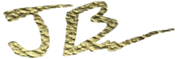

Hey, my name is Jesse!
Maybe you know me... I live in downtown Boise and I drive a super sexy black power wheelchair. In high school, I won the Rocky Mountain Bike Series Championship. I have loved riding ever since.
Four years ago, while I was practicing tabletop jumps at the Eagle bike park, I flew over my handlebars and broke my C4 vertebrae. Due to the fall, I have an incomplete spinal cord injury which caused me to be in a wheelchair, unable to raise or move my arms and legs.
Since my injury, I have been training every day; practicing walking up and down stairs, kneeling for core stability and even doing sit ups so I will be able to walk and live 100 percent independently.
I love doing art because it is therapeutic and creative. I hope you enjoy these handmade pieces of art!

Check This Out

Sci-Fi

Nature
Bookmarks
Contact Me
If you would like to order embellished, high quality prints and bookmarks please send me an email! I am always happy to answer questions and receive feedback about my site.
Buy Prints and Bookmarks
Prints and bookmarks are hand embellished by Jesse to enhance each print while maintaining the look of the original artwork. FedEx shipping will be calculated and added to the order's total. Contact Jesse through email to place an order.
- Laminated Bookmark - $5.00
- 4" x 6" print - $15.00
- 9" x 12" print - $35.00
- Science Fiction -
Oceanaut and the Sea Dragon
The New World Government finally perfected its genetic research through the Lazarus Project, bringing extinct animals back and creating multitudes of hybrid animals. The main goal of the technocratic and artificially intelligent (A.I.) controlled communist New World Government (NWG) was to protect the environment from global warming and contamination from overpopulation and human consumption. For the artificially intelligent computer lead government, the first threat was human beings who had fled to every sparsely inhabited place on earth. The last remaining humans even adapted to be able to live underwater in specially built colonies in the oceans. It sounded complex but the noncompliant unregistered humans were desperate to live in a free society so they worked together to create underwater habitations that could maintain a constant atmospheric pressure equal to that of sea-level by using extremely well crafted airtight pressurized building materials. The NWG needed a Way to hunt down the subaquatic colonists and scare any human being from entering the oceans which could harm the remaining plants and animals in the fragile ecosystem. The NWG's A.I. Computer guided government calculated a plan to protect the oceans that was based on the worst fears of the lesser developed human species; a horrifying sea monster.
The biggest goal for the N.W. G's scientists was also the supreme challenge. It was to bring back the biggest alpha predator in Earth's history; a gigantic, blood thirsty, ocean dwelling megalodon. This prehistoric shark was the largest predatory fish in the oceans millions of years ago. Due to the relatively short half-life of DNA before its destruction, the scientists knew it was impossible to bring back a dinosaur even using the perfected gene editing tool known as Crisper. So, what did the genetic manipulation scientists do? They combined the DNA of two or more animals that would convey the same concept of the gigantic and terrifying prehistoric shark. By using different gigantic animals DNA, they would achieve the goal of creating a Sea monster that would prevent any human being from entering the world's oceans ever again. All the scientists needed were animals with the intelligence, size and special hunting Instinct that would make it an alpha predator. Little is known about this hybrid hunter of the seas other than it must've been a genetic combination between a whale and possibly a crocodile with a great white shark.
The animal has highly effective eyes at the deepest depths where there is little to no light, a gigantic mouth with dozens of razor-sharp teeth the length of a samurai sword and has approximately the size of a city bus. The beast could easily swallow multiple people whole without even chewing them first. The monstrosity could even eat a heavily armored oceanaut without having to slice through their limbs first. The sub aquatic oceanauts Who are unfortunate enough to see the beast or typically shredded into small pieces of flesh and metal shards because the sea monster is known to like to “play “with its dinner before engulfing the remaining parts of its prey. Because of the mystery of its genetic make-up and the unknown details of the beast, it was given the name “Sea Dragon“ by the sea colonists.
Like most mad scientist who have insane ideas, The NWG scientist created the Sea Dragon without thinking about the repercussions. The scientist never thought what would happen if they created a predator smart enough, fast enough, and deadly enough, to kill even human beings called Oceanauts who were highly trained in subaquatic tactical warfare. The monster they created quickly dominated and destroyed every other predator of this sea thus creating a global ecological disaster with the creation of a single hybrid animal that was not native to any waters around the planet and would eventually devour everything in the world's oceans. For this reason, the New World government or NWG contracted hundreds of bounty hunters to kill the sea dragon. The hunters came from every background and every part of the world. The NWG was so desperate to end this creature's life, they even opened the contract to non-genetically enhanced non-binary transhuman beings living in the outside of the Communists Global Community.
This “No questions asked “policy of contracting a hunter from any place, from any background allowed exceptionally talented hunters to apply. Even compared to the “perfected” cyborg, human animal hybrid experiments that a communist government run lab could create could not successfully hunt and kill the beast. Due to the negative consequences of the creation of the beast by the NWG's accelerated Lazarus Project, the NWG's Bureau of Public Information (BPI) quickly and falsely labeled the creation of the sea dragon as a common abnormality who's project was canceled before it was released for public viewing. The unrestricted hunting contract of the beast attracted a an exceptionally fierce and mysterious hunter.
Very little is known about the subaquatic hunter. No one knows his or her actual name, but they do know that they are one of the subaquatic colony's elite fighters from the Defense Force known as Oceanauts. The Oceanauts patrolled the waters outside the underwater colonies which were hidden deep underwater for the colonists living outside of the NWGs intensively monitored and surveilled global community. Regardless of not having a name, the hunter has been given the nickname “Massai“, which comes from the name of a tribe of people in Kenya. The hunter was given this name because of the simple spear used by the hunter to kill the sea dragon. The spear resembled those which had been used in antiquity by Greek warriors and the Massai people to hunt lions and giant beasts in the wild hundreds of years ago.
The oceanaut is equipped with a high-tech armored suit called the “EXO suit”. The suit has multiple airtight movable joints and can maintain and atmospheric pressure at any depth equal to that of the surface above water and uses an air recycling device that allows the hunter to remain underwater indefinitely without having to return to the surface for air. The hunters dual tubular pack on the back of the EXO suit serves as an energy source to power the oxygen filtration system, a battery pack to power The EXO suits high-powered light, rear Hydro thrusters like those of a jet Pack propulsion system located on the back and under the feet of the EXO suit to quickly propel the hunter in a flash in any direction. But the most advanced part of the latest generation of the EXO suit is also the simplest in appearance. The spear the hunter uses to thrust at the sea dragon while it's attacking or throw at it from a distance has a magnetic retrieval system that automatically returns and reattaches to the Oceanaut's hand on command after it is thrown like a boomerang.
After killing the sea dragon will the NWG keep its word and financially compensate the warrior? Or will they take the hunter as a prisoner for not following the party's established rules and send the hunter to The Ring orbiting The Earth in space to entertain the elites? Perhaps the oceanaut warrior is not concerned with the NWG's plans. After all, any warrior living outside of the cities understands the NWG is not trustworthy. Maybe the warrior never intended on returning home but instead has A bigger plan unbeknownst to the NWG…?

Cosmos
Planets
Astronaut

Dunes

Robot

Sphere

Apocalypshit
In the near future Earth has become polluted and has trash orbiting around it. The International Space Federation has attempted to terraform mars and give it a breathable atmosphere. To do so, the New World Government had to create genetically modified humans that can survive on little to no oxygen. They were created as slaves to mine for valuable resources to help build a colony on Mars.
However, experiments to create new lifeforms on another planet backfired and the goblin-like human laborers revolted and began destroying the colony to gain their freedom. The International Space Federation deployed colonial armed marines and dropped bombs on the failed experiment so that they could restart after exterminating the entire hybrid “goblin” species.
The only animals and plants that exist on Mars as it is terraformed are genetically modified animals, plants and hybrid alien creatures that can survive in the low oxygen atmosphere. The Colonial Marines hunted goblins cave by cave until they had exterminated the race. The New World Government could then begin creating a new colony to finish terraforming Mars.

Man-Pig
The New World Government has created hybrid race of people with genes from humans and animals. When the government discovers a couple of genetically modified humans have given birth outside of government-controlled laboratories, the authoritative government sends secret police to the house to terminate the disfigured animal human newborn child before the general public is aware of the natural born freak creation.
The same government has created a ring that orbits earth that is man-made of simple landscapes and plant life. It has a light atmosphere and they can send people there who did not follow the rules of the new government. The government sends prisoners to the ring, into exile where they die a slow death. The exiled which resort to killing each other for food, suffering in isolation with a beautiful view of earth as they die slowly. The New World Government raised human animal hybrid monsters in captivity, away from public view. They would then send them to the ring to attempt to survive along with the prisoners, providing them a form of entertainment akin to a gladiator spectacle.
The protagonist is one of the last non-genetically modified natural born humans. He has a robotic prosthetic right arm. He has no weapons other than a knife due to the No Arms for Peace rule on earth. He comes from a generation of warriors dating back thousands of years. He fought as a colonial Marine on Mars during the Colonization Wars but got out once he realized he was just killing genetically modified human hybrids who were working as slaves in the new colony. He used to live on the furthest edges of modern society but he is aware of how twisted the New World is and voluntarily goes to the ring to hunt animal-human hybrid beasts.
Although the land is unnatural and has no resources, and is extremely hard to live on he, prefers it over the New World on Earth because it is real. He voluntarily goes to the ring of exile to entertain the global elites as a hunter, but to the surprise of the evil elite of the New World, the warrior prefers the freedom and realness of the ring over the New World. He refuses to return to Earth and instead stays in an attempt to colonize the ring.
He soon realizes that all the prisoners sent to the ring are just people Who had different ideas and different ideologies. They do not want to conform to the Communist One World government. The exiled prisoners and the ex-Colonial Marine decide to work together to attempt colonizing the ring, and possibly taming the monsters sent from the New World laboratories.

Space Samurai
The Space samurai was a Colonial Marine who was discharged at the end of the Colonial Wars on Mars. Now he is a warrior without a job. In Japanese, he is a ronin. A wandering person or a samurai without a master who decided to work for himself. He is a type of space pirate who works as an environmental services technician; part of a cleanup crew contracted by the National Space Federation to provide security around the new colony and terminate the remaining goblins on Mars. He has just one job to do; to cleanup and eliminate the remaining hybrid humans known as goblins.
Many of the remaining hybrid human laborers on Mars had become advanced enough to pilot spacecraft near Mars orbit and operate advanced weaponry acquired from the space Marines and security contractors during the Colonial Wars on Mars.
Nobody tells the ronin space pirate what to do. He enjoys killing, so when he is not engaged in short skirmishes with the goblins, he hunts the surrounding solar systems for treasure. He enjoys hunting alien creatures. He keeps Newly discovered alien species or dismembered parts from these monsters' corpses as prizes.
Unlike other warriors who prefer high-tech specialized weaponry, the ronin prefers the challenge and excitement of the fight using a simple samurai blade; a katana that has been passed down thousands of years from his great ancestors who used it in great samurai battles. He travels in a vintage, beat up ship called El Narval; An unknown monster that destroys, taking no prisoners like a bloodthirsty pirate ship. He will serve as a mercenary around the nearby solar systems or for whoever offers to pay the right price.

Gecko
The dangers of global warming and environmental disaster due to overpopulation are finally under control. The New World Government has successfully lowered the carbon output caused by human consumption and burning of fossil fuels to 0. In addition, The New World Government or “NWG” has found a “cure” for all people suffering from terminal illness, disabilities and the greatest pestilence of all, elderliness and decrepitude. Everyone who isn't working on the newly terraformed Mars or sent to The Ring remains on paradisiacal Earth.
Everyone is young, healthy and nearly perfect in every way. No one has to give birth to children or have the unimaginable burden of raising children. Everyone is happy. The global economy is thriving better than it had in centuries. There is zero unemployment. Everyone has a purpose, everyone has a job. Everyone is part of the perfect machine that the globalized NWG has developed. The NWG's policies have created unprecedented prosperity and happiness for everyone who lives within the NWG's rules.
Some people have refused to abide by the rules and policies by not progressing with the rest of society. Those who had not evolved into sterilized, nonbinary, hybrid, transhuman beings could not keep up with the progress in society. Even if the old species of human could keep up, they would not be conformed to the rules of The NWG. Most of the less developed species of human beings had fled the cities to search for refuge in the deserts, forests and jungles around the planet. Although the number of humans living outside of society is less than hundreds of thousands, the NWG considers these beings a threat to the balance of the planets ecosystems and the order to the New World government.
To help manage the overpopulation of underdeveloped species living outside of the cities, the New World Government created highly specialized cyborg chimeras to patrol the areas outside of civilization. To patrol the jungles of the world, the NWG created a breed known as Hunter Killer Geckos.
Despite the name, a Hunter Killer Gecko is actually a genetic manipulation that combines the DNA of a human and a chameleon which allows a “gecko“ to have exceptional camouflage abilities to the point of being completely invisible thanks to the addition of Nanomachine light cells which enhances the natural camouflage ability of the geckos DNA to perfection. The gecko is a prototype that is enhanced with additional prosthetic lenses on every part of its head to provide a 540° surveillance view day and night. Geckos can blend into the foliage and hunt people living in the forest who decided to leave the cities hoping to live off the grid. They hunt and live off the land away from the modern utopia of the global civilization. The New World Government does not allow any people to endanger the natural environment and ecosystems of the jungle and strictly forbids the use of weapons for hunting under the long-standing "No Arms for Peace" agreement which was enacted even before the creation of The Ring.
The NWG has sent up to as many as 100 geckos into the jungles but the exact number is unknown because no one has actually “seen” a gecko. The geckos find and terminate anyone they encounter. They are exceptional hunters, using katanas because they are the most efficient and eco-friendly means of environmental cleanup. From head to toe, a gecko is a perfect weapon. The only part of the lab-created cyborg chimera that is not specifically designed for hunting and killing in the jungle is the tiny infrared camera in the middle of its head. The camera emits a red glow and is solely used to record the rattling terminations of the people it finds, and brutally executes in the jungle. All of the executions are live streamed videos sent back to the cities for entertainment. They serve as a reminder that life in a peaceful globalized world with rules keeping everyone safe and happy is best for everyone.

Interdimensional Warfare
The hybrid beings known as “goblins” who were created and sent to terraform Mars had encountered an interdimensional time-travel weapon during the Colonial Wars. The device, colloquially referred to as a “stretcher“, was used by the hybrid race in attempts to flee the war on Mars. Because the “goblins“ were solely designed for the incapacitating labor in a hypoxic environment, they lacked the intelligence and technical training to use the stretcher purposefully. The goblins used the it to create portals to travel away from the war and back to anytime and any place.
Unfortunately, the hybrids quickly discovered that regardless of where, or to when they traveled, they would always encounter death and bloodshed. The Space Knight is a medieval warrior and a paid mercenary. Due to his more advanced armor and weaponry, it is believed the knights lineage can be traced to nobles and rulers of his era. Why does the knight who was born as a wealthy elite work as a mercenary? Because he loves killing. He loves being covered in blood and craves the adrenaline which runs through him in warfare.
When the knight first encountered the goblins, he mistook them for disfigured, demonically possessed peasants who had acquired genetically enhanced strength and resilience through surviving the Black Death. Soon after the knight dismembered all of the goblins, he haphazardly utilized the stretcher time travel device to open portals to space and time. The space Knight recognized a terrific battle occurring on an object floating in space that appeared to be a golden ring, and decided he would find a way to partake in the massacre on the distant object. As the Knight opened the Interdimensional portal to the future, he inadvertently opened several portals resulting in a chaotic collision of dimensions spanning time and space.More Galleries
Nature
Bookmarks
- Nature -

Haystack
Sea Giants

Sea Turtle
Galactic Tree Frog
Chameleon
Night Surf
Warming Up in a Cold World
Gecko Lick
Snowy Mountain Lake
Dusk
Skier
Airstream
More Galleries
Sci-Fi
Bookmarks
- Bookmarks -

Space Snacks
Big Air

Abducted
Unicorn

Bear Camp

Cliffhanger

Rattler

Yeti Kicker
More Galleries
Sci-Fi